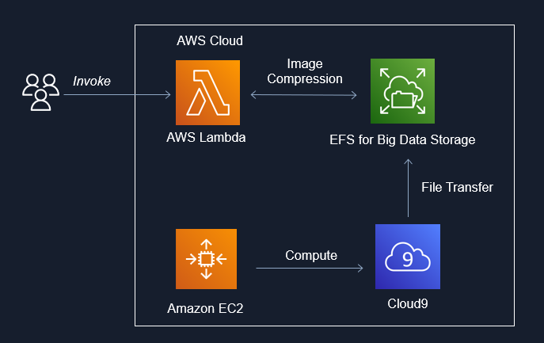

Project Repo: https://github.com/athletedecoded/img-compress

IDS721 Spring 2023 Project 4 - Image Compression for Big Data
Image Compression for Big Data using EFS x Lambda x Rust. Uses downsampling + filter to perform inplace image compression in parallel and reduce the memory cost of big image data storage. Includes upsampling invocation option to restore image size.

Useage
cargo lambda invoke --remote \
--data-ascii '{"dir": "imgs", "scale_op": "down", "scale_factor": 2, "filter": "Gaussian"}' \
--output-format json \
img-comp
where:
- dir = subdirectory to perform compression on i.e. /mnt/efs/{dir}
- scale_op = "down","up"
- scale_factor = factor to scale width/height
- filter = "gaussian" (default), "nearest", "triangle", "catmullrom", "lanczos3"
Developer Setup
Configure AWS IAM Permissions
- Create an IAM User policy for "LambdaDev" with
AWSLambda_FullAccesspermissions and added custom inline permission config
{
"Version": "2012-10-17",
"Statement": [
{
"Sid": "PermissionsToDeploy",
"Effect": "Allow",
"Action": [
"iam:CreateRole",
"iam:CreatePolicy",
"iam:PutRolePolicy",
"iam:AttachRolePolicy",
"iam:UpdateAssumeRolePolicy"
],
"Resource": "*"
}
]
}
- Add "LambdaDev" access keys to your local ~/.aws/credentials file along with environment variables:
- aws_access_key_id
- aws_secret_access_key
- aws_role_arn (NB: this is copied from the IAM user summary and is formatted as arn:aws:iam::<aws_acct>:user/<iam_user>)
- region
- Create an IAM Role policy named "EFSxLambda" with
AWSLambdaBasicExecutionRole+AWSLambdaVPCAccessExecutionRole+AmazonElasticFileSystemClientFullAccesspermissions
Deploy Lambda Fxn from Developer Environment (i.e. this repo)
# Install cargo-lambda
$ python3 -m venv ~/.venv
$ source ~/.venv/bin/activate
$ make install
# Build Binary
$ make release
# Deploy to AWS
$ make deploy
Setup Cloud9
- Launch Cloud9 console and create an environment with "New EC2 Instance" + "SSM Connection" + "default VPC"
- Once provisioned, click on env details > EC2 instance > manage EC2 instance. Make note of the associated security group listed.
Setup EFS
- Launch AWS EFS console and provision EFS instance
- Once provisioned, click on file system name > network. Make note of the security group id listed.
- Under EFS access points tab > add access point > create with following settings:
- Name: Lambda2EFS
- Root directory path:
/(by default root is /mnt/efs) - Posix User ID: 1000
- Posix Group ID: 1000
- Owner User ID: 1000
- Owner Group ID: 1000
- Access point permissions: 0777
Configure Security Groups
- From EC2 console > security groups > new security group:
- Name = ImgComp
- Description = Mangage img-comp lambda access
- VPC = same as EFS (default)
- Save
- To enable EFS --> Lambda: click ImgComp security group ID > edit inbound rules > Set: type = NFS, protocol = TCP, port range = 2049, source = custom > add the EFS security group ID (from the drop down box)
- To enable EFS --> Cloud9: click Cloud9 security group ID > edit inbound rules > Set: type = NFS, protocol = TCP, port range = 2049, source = custom > add the EFS security group ID (from the drop down box).
- To enable Lambda & Cloud 9 --> EFS: click EFS security group ID > edit inbound rules > add inbound rule for each:
- Set: type = NFS, protocol = TCP, port range = 2049, source = custom > add the ImgComp security group ID (from the drop down box)
- Set: type = NFS, protocol = TCP, port range = 2049, source = custom > add the Cloud9 security group ID (from the drop down box)
Configure Lambda
- Configuration > Permissions > edit execution role > select "EFSxLambda" from above
- Configuration > VPC > edit > select default VPC (to match EFS)
- Configuration > VPC > edit > select security group as ImgComp
- Configuration > File Systems > add EFS + access point + local mount path = /mnt/efs
- Configuration > Env Variables > LD_LIBRARY_PATH = /mnt/efs
Mount EFS to Cloud9
- Launch Cloud9 environment
- Run the following commands to mount to /mnt/efs
# Docs: https://repost.aws/knowledge-center/efs-mount-automount-unmount-steps
# Install efs-ultils (https://docs.aws.amazon.com/efs/latest/ug/installing-amazon-efs-utils.html)
sudo yum install -y amazon-efs-utils
sudo mkdir -p /mnt/efs
# From img-comp EFS > Attach > copy EFS helper command
sudo mount -t efs -o tls <AWS_FS_ID>:/ /mnt/efs
# Switch ownership permissions
sudo chown ec2-user:ec2-user /mnt/efs
sudo chmod 755 /mnt/efs
# Copy local Cloud9 imgs directory to EFS
cp -r imgs /mnt/efs
# check files have been moved over
cd /mnt/efs
ls
Gotchas
- Invokation failure may be insufficient lambda CPU/tmp storage that needs to be reconfigured for higher capacity